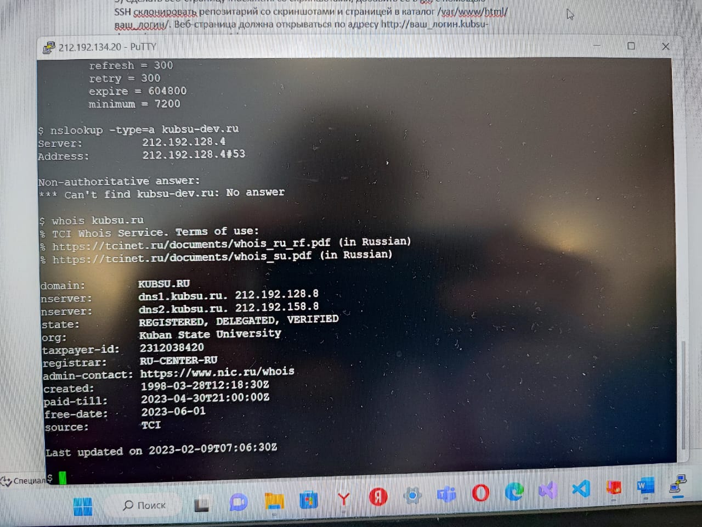

С помощью команды ping на учебном сервере узнать IP-адрес веб-сервера kubsu.ru
С помощью команды nslookup узнать A-записи и MX-записи домена kubsu.ru
С помощью команды nslookup узнать A-записи и MX-записи домена kubsu-dev.ru

С помощью команды whois узнать дату регистрации домена kubsu.ru
С помощью команды whois узнать дату регистрации домена kubsu-dev.ru